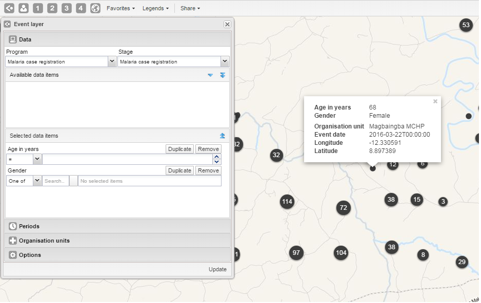
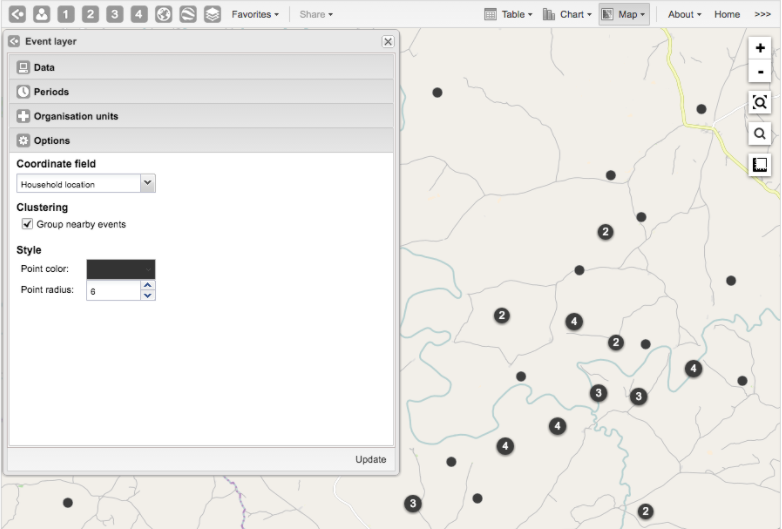
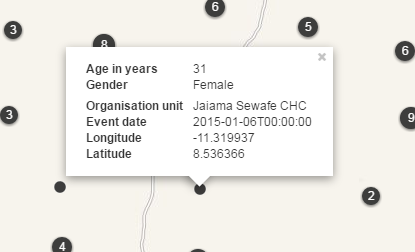

The event layer displays the geographical location of events registered in the DHIS2 tracker. Provided that events have associated GPS coordinates, you can use this layer to drill down from the aggregated data displayed in the thematic layers to the underlying individual events or cases.
You can also display aggregated events at the facility or at the boundary level. You do this through a thematic layer using event data items. This is useful when you only have the coordinates for the Org Unit under which the events are recorded.
Event layer
|  |
In the top menu, click the event layer icon.
Click Edit layer.
Select a program and then select a program stage.
If there is only one stage available for the selected program, the stage is automatically selected. A list of data elements and attributes will appear in the Available data items panel.
Select any data element or attribute from this list as part of your query.
To select you can either double-click a data element or (multi) select and use the single-arrow downward button. The double-arrow button will select all data elements in the list. All selected data elements will get their own row in the Selected data items.
For data elements of type text you will get two choices: Contains implies that the query will match all values which contains your search value, and Is exact implies that only values which is completely identical to your search query will be returned.
For data elements of type option set, you can select any of the options from the drop down box by using the down-wards arrow or by start typing directly in the box to filter for options.
In the Periods section, select the time span for when the events took place. You can select either a fixed period or a relative period.
Fixed period: In the Period field, select Start/end dates and fill in a start date and an end date.
Relative period: In the Period field, select one of the relative periods, for example This month or Last year.
In the Organisation units section, select the organisation units you want to include in the query.
In the Options section, you can:
Select a value from the Coordinate field for the positions shown on the map. By default, "Event location" is selected. Depending on the data elements or attributes that belong to a program, other coordinates such as "Household position" are available.
|  |
Select or clear Clustering to group nearby events.
Go to Style to select a color for the cluster points or change the radius of clusters (between 1 and 20).
Clustering if you want to group nearby events and change the style of the cluster points.
Click Update.
By default events are clustered in a map. You can turn off this function to display all events separately.
In the top menu, click the event layer icon.
Click Edit layer.
Click Options.
Clear Group nearby events check box.
Click Update.
In the top menu, click the event layer icon.
Click Edit layer.
In the Options section, change the Point color and Point radius.
Click Update.
For events in a cluster map, you can modify the information displayed in the event pop-up window.
Pop-up window with event information
|  |
Open the Programs / Attributes app.
Click Program.
Click the program you want to modify and select View program stages.
Click the program stage name and select Edit.
Scroll down to the Selected data elements section.
For every data element you want to display in the pop-up window, select corresponding Display in reports.
Click Update.